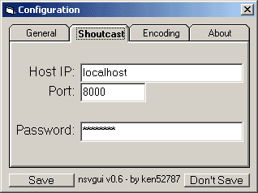
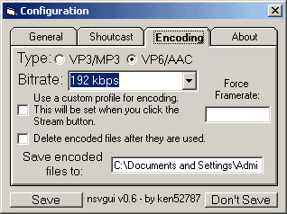

Configuration Setup
The first step to using nsvgui is getting the config setup. This lets the program know how you want it to operate. It starts off with a brief description of the program and a link to the homepage incase you ever need to get back to the site. Only two tabs you need to worry about, Shoutcast and Encoding.
Shoutcast tab

Host IP: This is the IP of where to stream to. If you have no idea what a shoutcast server is, then you need to check out http://www.shoutcast.com. You can't run a stream without one. Enter the IP in here, without the port. If you are running the server on the same pc as this program, then use localhost or 127.0.0.1 as the IP.
Port: This specifies what port to connect to the shoutcast server with. Even though the source is suppose to use the baseport + 1, you don't do that with this. The default port is 8000, check your shoutcast config if you are unsure on what yours is.
Password: This is the password that the shoutcast server requires. Check your shoutcast config if you are unsure of what it is. I wouldn't recommend using the default "changeme" for security reasons (it says changeme for a reason).
Encoding tab

(If
you did all your encoding ahead of time, you can skip this)
Type: This is where you choose the codecs you want. You need to have the codecs installed on your pc to use them. You can get VP3 here and get VP6 here. VP6 produces higher quality files, so it is recommended over VP3.
Bitrate: This is where you set the bitrate of the stream. The math for figuring this out is upstream/watchers=bitrate. You can find out your upstream from here. A typical cable/DSL upstream speed is 256kbps, so if you want 4 listeners, that'd be 256/4 which would be 64kbps. If you want more watchers with higher quality, you can always look into professional servers.
Force framerate (experts only): Use this if nsvenc has a problem detecting the framerate of a file. This happens a lot with XVID movies.
Custom profiles (experts only): Use this if you would like to configure the codecs before the encode.
Delete encoded files: Use this if you want the encoded files to be deleted after they are used in the stream. If you keep this off, the program will use previously encoded files if you insert the source files into future playlists, cutting the time to get the stream running down dramaticly.
Save encoded files to: This is the folder that the files will be encoded to. If you don't care where they go, leave at default and nsvgui will handle it.
That's it, you're done!
Go back to index